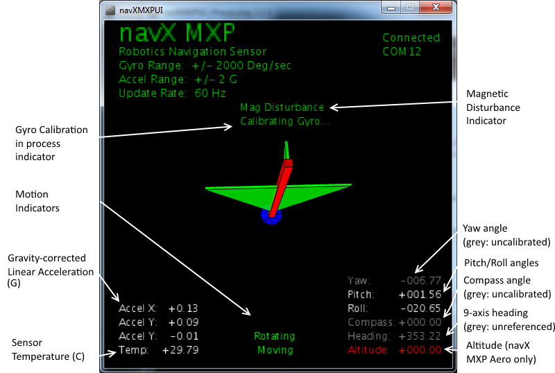

|
navXMXPUI
The navXMXPUI user interface application is a great way to visualize the data provided by the navX MXP. This application is developed in the Processing 2.0 language and is cross-platform.  Gyro Calibration in Progress IndicatorThe Gyro Calibration in Progress Indicator is displayed during initial gyroscope calibration, which occurs after power is applied to the navX MXP. If the gyroscope calibration does not complete, the navX MXP yaw accuracy will be adversely impacted. For more information on Gyro Calibration, please see the Gyro/Accelerometer Calibration page. Motion IndicatorsThe navX MXP provides to dynamic motion indicators: (a) the "Moving" indicator and (b) the "Rotating" indicator. The Moving indicator is present whenever the current Gravity-correct Linear Acceleration exceeds the "Motion Threshold". The Rotating indicator is present whenever the yaw value within the last second exceeds the "Rotating Threshold". Note that the navX MXP Gyroscope Calibration only occurs when the navX MXP is not Rotating for a few seconds. Gravity-corrected Linear Acceleration (G)The navX MXP automatically subtracts acceleration due to gravity from accelerometer data, and displays the resulting linear acceleration. These measures are in units of instantaneous G. Sensor TemperatureThe Sensor Temperature indicates the die temperature of the MPU-9250 IC. Since shifts in gyro temperature can impact yaw accuracy, the navX MXP will automatically perform Gyroscope calibration whenever the navX MXP is still. See the Gyro/Accelerometer Calibration page for more details. Magnetic Disturbance IndicatorOnce the navX MXP Magnetometer has been calibrated (see the Magnetometer Calibration page), whenever the current magnetic field diverges from the calibrated value for the earth's magnetic field, a magnetic disturbance is indicated. Yaw AngleThe Yaw Angle is displayed in grey text if Gyro Calibration has not yet been completed. Once Gyro Calibration is complete, the Yaw Angle text color will change to white. Pitch/Roll AnglesThe Pitch/Roll Angles are always displayed in white text, since Accelerometer calibration occurs at the Kauai Labs factory. Compass AngleThe Compass Angle displays the tilt-compensated compass heading calculated from the navX MXP's Magnetometer and the tip/tilt measure from the Accelerometers. The Compass Angle is displayed in grey text if Magnetometer Calibration has not yet been completed. Once Magnetometer Calibration is complete, the Compass Angle text color will change to white. 9-axis HeadingThe 9-axis Heading displays the navX MXP's best estimate of current heading, based upon the last known valid Compass Angle, and updated by the change in the Yaw Angle since the last known valid Compass Angle. The last known valid Compass Angle is updated whenever a Calibrated Compass Angle is read and the navX MXP has recently rotated less than the Compass Noise Bandwidth (~2 degrees). The 9-axis heading is displayed in grey text if Magnetometer Calibration has not yet been completed and/or if no undisturbed magnetic readings have occurred. AltitudeThe Altitude displays the navX MXP's calculated current altitude, based upon the reading from the pressure sensor, the current temperature and the sea-level pressure. The Altitude is displayed in red text if a Pressure Sensor is not installed on the navX MXP. Pressure Sensors are only installed on the navX MXP Aero. Valid altitude readings are displayed in white text. Instructions for Installing/Running the navX MXP UI
drivers/windows/vcp/ Run the VCP_V1.4.0_Setup.exe program within this directory to install the USB VCP driver. Go to Your installation directory. Typically, this is C:\Program Files (x86)\STMicroelectronics\Software\Virtual comport driver
Go to Your OS version directory (Win7 or Win8) Double click on dpinst_x86.exe if you are running a 32-bits OS version Double click on dpinst_amd64.exe if you are running a 64-bits OS version
navXMXPUI\application.windows64
If your computer has more than one serial port, edit the batch file to add the COM port number to use, following to the end of the java line, as follows: java -Djava.ext.dirs=lib -Djava.library.path=lib nav6UI port=COM12 Instructions for Customizing the navX MXP UI
If your computer has more than one serial port, you must run the navXMXPUI from the command-line and specify the serial port to use as a command-line parmeter, following these steps:
java -Djava.ext.dirs=lib -Djava.library.path=lib nav6UI port=COM12 | |
► Sign in to add a comment